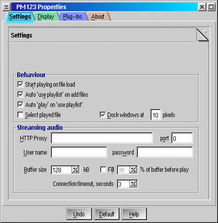
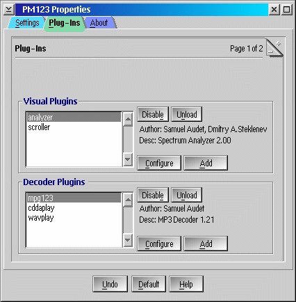
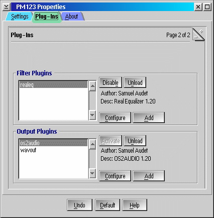

PM123's Configuration Dialog

This proporties dialog can be accessed from the main
menu. In the dialog you can configure PM123's audio engine and interface.
- Start playing on file load
- Automatically starts playing when you load a file.
- Auto 'use playlist' on add
- Automatically selects "Use this playlist" when adding files or directories to the playlist.
- Auto 'play' on 'use playlist
- Automatically starts playing on "Use playlist".
- Select played file
- Automatically selects currently playing file in the playlist.
- Trash buffers on seek
- This option provides a much faster response on seek operations (fast forward, rewind, jump to position), but consumes more CPU time during the seek.
- Scroll / Infinite
- Keeps scrolling the display forth and back until you start feeling sick :-)
- Scroll / Once
- Scrolls the display forth and back once.
- Scroll / Disable
- Prevents the display from scrolling. Useful if you are scroll-sick.
- Default display / Filename
- Display the filename by default.
- Default display / ID3 tag
- Display the ID3 tag by default.
- Default display / File info
- Display the file information by default (bitrate, frequency, mode).
- Dock playlist window to x pixels
- This will allow the playlist to dock into the main window so that when
then main window is moved, the playlist follows. Specify the distance in
pixels to allow for docking..
- HTTP proxy URL
- Specify your HTTP proxy here.
- HTTP auth
- This is your HTTP authentication string in format username:password.
- Buffer size
- Specifies the read ahead buffer size (useful when plaing across a network or from a streaming source).
- Fill buffer before playing
- Fills the buffer (see above) before playing.

This dialog is divided into two parts - one for the visual plug-ins
and the second for decoder plug-ins.
- Enable/Disable
- Enables/disables the selected plugin.
- Unload
- Unloads the plugin completely.
- Configure
- Avalaible only if the plugin is configurable. Click this button to set plugin's settings.
- Add
- Add a plugin (some visual plugins are skin specific, see PM123 sound visualization).

This dialog is also divided into two parts - in filter plugins part,
you can add a filter, in output plugins part you can use a output plugins.
- Enable/Disable
- Enables/disables the selected plugin.
- Unload
- Unloads the plugin completely.
- Configure
- Avalaible only if the plugin is configurable. Click this button to set plugin's settings.
- Add
- Add a plugin.
- Activate
- Activate an output plugin. There must be always one active output plug-in. With wavout
plugin, you can save the music to a WAV file. Wavout plugin is very useful for gabbing CD
audio tracks... ;-)
Last properties dialog is About dialog. There are some info about PM123,
author etc.